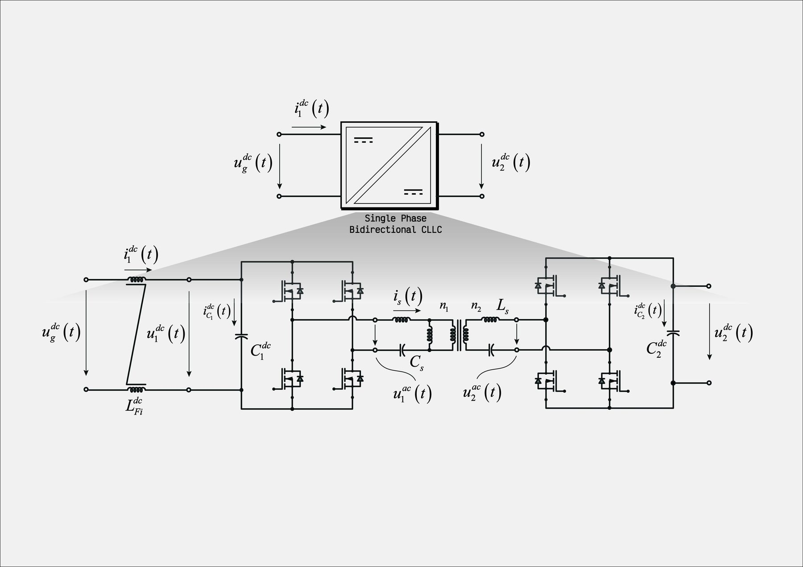
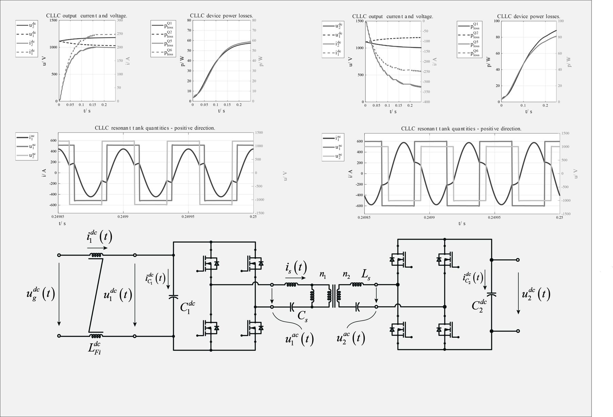

Resonant CLLC converter
Bidirectional resonant CLLC as an alternative to the DAB: tank transfer function, simulation in both power directions, losses, transformer sizing and an optimiser for a CLLLC tank.

What it is
The CLLC is a resonant, symmetric version of the isolated DC/DC stage: the series inductances and resonant capacitors on both sides of the transformer shape the current into a near-sinusoidal waveform, so the switches turn on at zero voltage and the turn-off current is small. Power flow and voltage gain are set by the switching frequency around resonance rather than by a phase shift.
Two studies are included: a Simscape bench of a 250 kW CLLC stage, and an analytic state-space model of a CLLLC tank (800 V / 800 V, 250 kW) with an optimiser for the resonant elements and the transformer.
What the bench does
- Transfer function of the resonant tank and choice of the operating frequency range.
- Simulation in both power directions with the same control code, device losses and spectrum.
- First-cut sizing of the high-frequency transformer from the simulated volt-seconds and currents.
Figures
